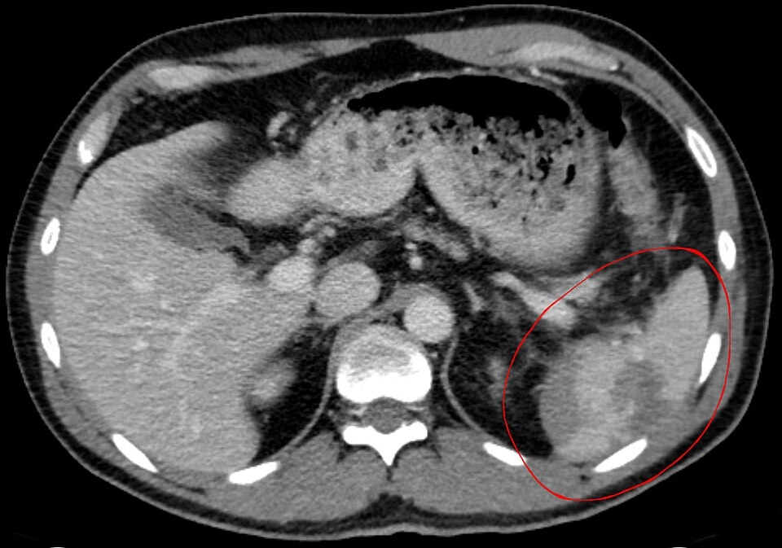
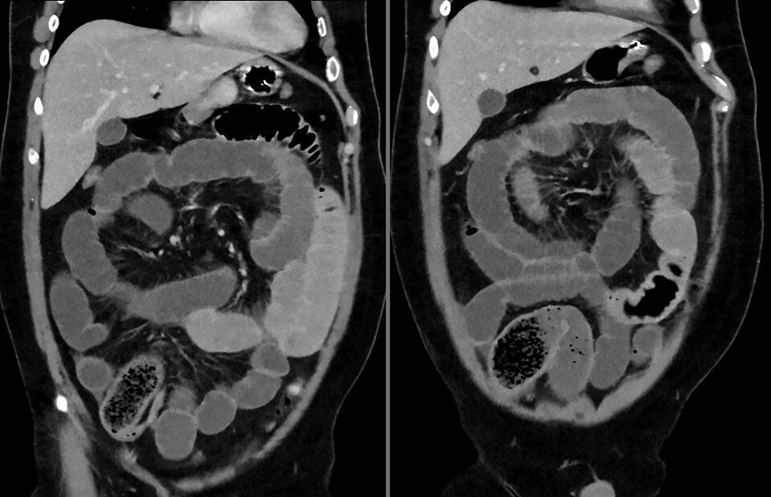
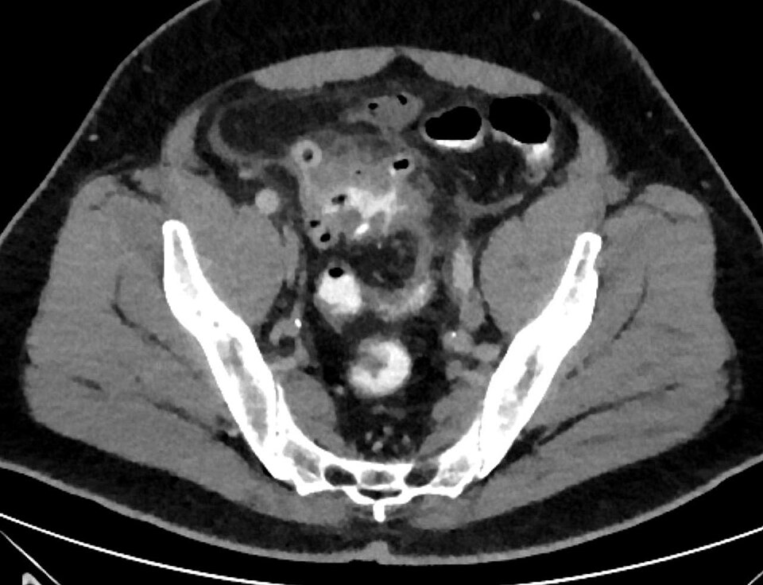
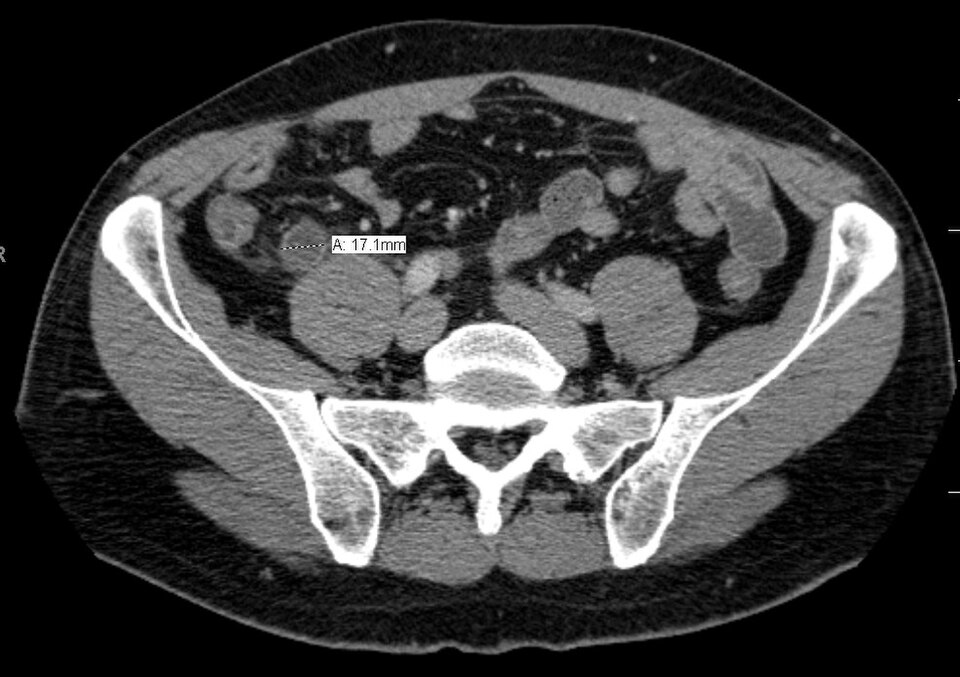
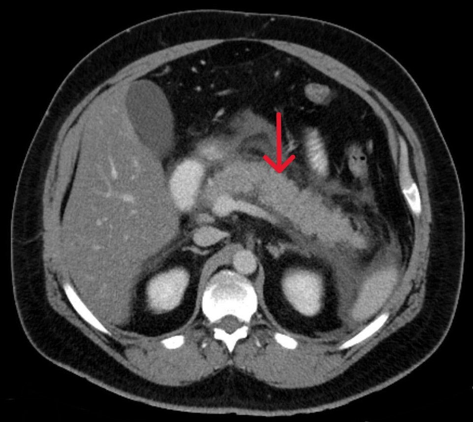
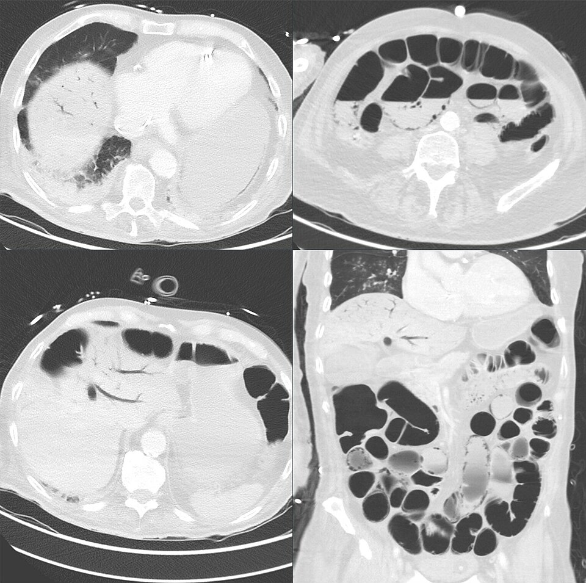
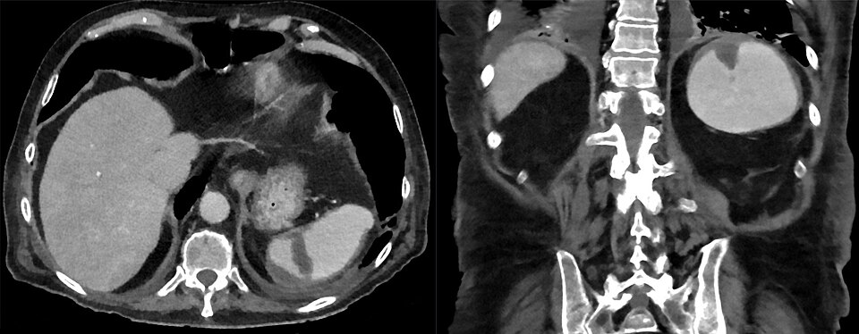

CT בטן
איך מזמינים, איך מתמצאים בחתך ומה מחפשים: חסימה, סעיפים, תוספתן, לבלב, איסכמיה וחבלה
בסוף המפגש תדעו
- לבחור פרוטוקול נכון: בלי חומר ניגוד, עם חומר ניגוד לווריד, CTA ומתי חומר ניגוד דרך הפה
- להתמצא בחתך רוחבי: איפה ימין, איפה הכבד, הטחול, אבי העורקים והווריד הנבוב
- לזהות ב-CT חסימת מעי דק, לולאה סגורה וסימני איסכמיה
- לתאר דלקת סעיפים לפי Hinchey ודלקת תוספתן לפי הקריטריונים
- לדעת מתי עושים CT בדלקת לבלב ומה מחפשים בו
- להבין את מקומו של CT באיסכמיה של המעי ובחבלה
לא כל CT אותו דבר
- בלי חומר ניגוד: אבנים בכליות. הפחד מפגיעה כלייתית מחומר ניגוד "הולך ומתיישן". שוקלים אותו מול התועלת
- חומר ניגוד דרך הפה: בדרך כלל לא צריך. היוצא מן הכלל: חשד לניקוב או לדליפה מחיבור. גם אז אוויר מחוץ למעי, דופן לא רציפה ותסנין בשומן בדרך כלל מספיקים
- חומר ניגוד ברקטום: בלי עיכוב, אבל לא נוח למטופל ולא מוסיף הרבה. בחסימה של המעי הגס יש לו מקום
- CTA: צילום בזמן השיא העורקי או הוורידי. בחשד לאיסכמיה של המעי או לבתירה של אבי העורקים. להגיד לרדיולוג מה החשד
- הריון: מעדיפים אולטרסאונד ו-MRI. אם צריך CT כדי לא לעכב טיפול באם, עושים
- מטופל לא יציב: לא שולחים ל-CT במקום לחדר ניתוח
חתך רוחבי בבטן העליונה

👆 לחצו על אזור בתמונה כדי לקרוא עליו. מסתכלים כאילו עומדים לרגלי המטופל: ימין המטופל בצד שמאל של התמונה, הבטן למעלה
בצד ימין של המטופל (שמאל התמונה). איבר מוצק עם האדרה אחידה בשלב הוורידי
מלאה מזון ואוויר (השחור הוא גז). איברים חלולים מכילים אוויר ונוזל. אוויר מחוץ למעי הוא אוויר חופשי
מימין לקו האמצע, לפני החוליה. בהלם הוא יכול להיראות שטוח
עגול, צמוד לחוליה משמאל. ב-CTA בודקים את המילוי שלו ושל ענפיו, למשל העורק המזנטרי העליון
אזור לא אחיד עם האדרה מופחתת: קרע בפרנכימה ודם סביבו. בחבלה קהה מבצעים CT בשלב עורקי ובשלב ורידי כדי לדרג את הפגיעה ולראות דימום פעיל
איפה, למה והאם יש איסכמיה
- CT הוא בדיקת הבחירה: רגיש וסגולי בחסימה מלאה או בדרגה גבוהה ומראה מיקום וסיבה. פחות רגיש בחסימה חלקית
- לולאה מורחבת מעל 2.5 ס״מ: חשד לחסימה בדרגה גבוהה
- אזור המעבר בין מעי רחב למעי צר וסיבות מבחוץ: גידול, דלקת, מורסה, בקע
- לולאה סגורה: לולאה בצורת U או "פול קפה" עם שני קצוות צרים. מערבולת במזנטריום = וולוולוס

דלקת סעיפים: Hinchey המתוקן
ב-CT: סעיפים, דופן מעובה, תסנין בשומן סביב המעי, מורסה. CT מאשר, שולל אבחנות אחרות וקובע חומרה
- CT לא מבדיל טוב בין III ל-IV. ההבחנה בחדר הניתוח. שניהם חירום כירורגי
- אחרי ההתאוששות: קולונוסקופיה בעוד 4–8 שבועות. 1–3% מה"סעיפים" הם בעצם גידול

דלקת תוספתן ב-CT
- הבדיקה השכיחה ביותר לאבחנה: רגישות 95%, סגוליות 94%. חומר ניגוד מעלה את הרגישות
- מה רואים: תוספתן מעל 7 מ״מ, דופן מעובה עם האדרה ("מטרה"), תסנין בשומן סביבו
- נוזל או אוויר סביב התוספתן: חשד לניקוב
- לא רואים את התוספתן ואין סימני דלקת? כנראה אין דלקת תוספתן
- המלצה עדכנית: CT במינון קרינה נמוך עם חומר ניגוד. מומלץ בכל מבוגר עם חשד, גם לתכנון הניתוח ולשלילת אבחנות אחרות

דלקת לבלב: מתי CT ומה מחפשים
- האבחנה: 2 מתוך 3: כאב אופייני, עמילאז או ליפאז פי 3 מהנורמה, הדמיה אופיינית. לא צריך CT כדי לאבחן כשיש שני הראשונים
- מתי CT עם חומר ניגוד: אבחנה לא ברורה, אישור חומרה, אין שיפור בטיפול שמרני, הידרדרות. השלב הוורידי (65–70 שניות) הכי מועיל
- נמק: אזורים שלא מקבלים חומר ניגוד (<40–50 יחידות לעומת 100–150 בלבלב תקין). עד 20% מהמטופלים
- סיכון לזיהום הנמק: 22% כשמעורב פחות משליש הבלוטה, עד 46% מעל 70%. גז בתוך הנמק מאשר זיהום, אבל נדיר
- אוספים: עד 4 שבועות "חריפים". אחרי 4 שבועות: פסאודוציסטה, או נמק מוקף דופן
- אולטרסאונד תמיד, לחפש אבנים (רגישות 95%)

CTA: הבדיקה שמצילה חיים
- החשד קליני: כאב קשה שלא תואם לבדיקה, מטופל עם פרפור פרוזדורים או מחלת כלי דם. איחור של מעל 24 שעות באבחנה של תסחיף לעורק המזנטרי העליון: ההישרדות יורדת מ-50% ל-30%
- CTA היא בדיקת הבחירה: רגישות 93%, סגוליות 96%. בשני שלבים (עורקי וורידי) רואים גם את מערכת הפורטה ואת אספקת הדם לדופן
- מה רואים: חסר מילוי בכלי הדם, דופן מעובה, שינוי בהאדרת הרירית, אוויר בדופן, גז בווריד הפורטה. גם פקקת בוורידי המזנטריום
- באיסכמיה בלי חסימה (NOMI) ה-CTA פחות אמין
- צילום פשוט כמעט תמיד תקין, עד שכבר יש נמק

CT במטופל חבול
- בחבלה קהה, CT הוא הכלי המרכזי לבירור מלא במטופל יציב
- חומר ניגוד לווריד בשלב עורקי ובשלב ורידי: דרגת הפגיעה באיברים המוצקים ודימום פעיל
- ההחלטה על ניתוח לפי המצב הפיזיולוגי, לא רק לפי הממצא. דם בבטן עם סימנים חיוניים יציבים: אפשר טיפול שמרני
- מה CT מפספס: פגיעות במעי ובסרעפת. נוזל חופשי בלי פגיעה באיבר מוצק, עם מנגנון וסימנים מתאימים: לשקול לפרוסקופיה אבחנתית
- מטופל לא יציב עם נוזל ב-FAST: חדר ניתוח, לא CT

ארבע הזמנות, ארבעה ממצאים
מחקרים שכדאי להכיר
21 מחקרי עוקבה מותאמים, 169,455 מטופלים. אותו סיכון לפגיעה כלייתית עם חומר ניגוד ובלעדיו (OR 0.97). זהירות ביתר לחץ דם ובסינון כלייתי של 30 ומטה
Obed M et al. Eur Radiol 2022;32(12):8432-42480 מטופלים עם דלקת קלה שאובחנה ב-CT, טיפול בבית. אשפוז: 5.8% עם אנטיביוטיקה, 3.3% בלי. טיפול בלי אנטיביוטיקה לא נחות
Mora-López L et al. Ann Surg 2021;274(5):e435-4221 מחקרים, 55,227 מטופלים. eFAST בסקירה הראשונית. CT של כל הגוף בפרוטוקול טראומה הוא מרכז הבירור בפצוע קשה, מוקדם ככל האפשר אם אין צורך בהתערבות מיידית
Huber-Wagner S et al. Eur J Trauma Emerg Surg 2025;51:158חמישה דברים לקחת למחלקה
- מזמינים CT עם שאלה: איזה פרוטוקול, איזה שלב ומה החשד. חומר ניגוד דרך הפה בעיקר בחשד לדליפה
- מסתכלים מכיוון הרגליים: ימין המטופל בצד שמאל של התמונה
- חסימה: אזור מעבר, לולאה סגורה, מערבולת וסימני איסכמיה
- סעיפים לפי Hinchey. תוספתן מעל 7 מ״מ עם דופן מעובה. בלבלב CT רק כשיש סיבה
- חשד לאיסכמיה = CTA מיד. מטופל לא יציב לא נכנס ל-CT